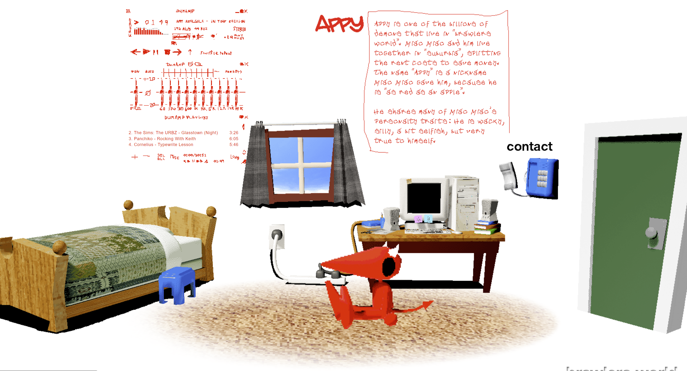

Journal
Standouts from Amir Dori's UX Best Practices for Mobile Games
Considering the average size of a device, hand, and the likelihood of being right handed, there are are easy, okay, and hard sections. Designers usually put ads and monetization buttons in the easy sections so users are more likely to press them, even if by accident.
While X's are a recognizable standard for closing pop-ups on screens, in a game it implies that it is unnecessary / a distraction. Therefor, in a game to encourage playability use closing buttons that imply satisfaction, like Finish or Continue.
User decisions that involve two buttons on the left and right should be carefully oriented. Choices we want the user to make should be on the right regardless if the answer is yes or no. The choice we do not want them to make should be on the left.
Prompt user reviews after a big achievement or satisfaction point will get better ratings in a seemingly more organic way.
A lot of these insights revealed to me a lot of the intention behind mobile app design and explained some of the patterns I see. I thought a lot of these design choices were similar because of the standardization in the design process but there is actually a deep and sometimes uncomfortable logic behind why things are the way they are.
Project Update: Mine and Taira's
One of my ideas for this project is to display my plant collection in a way that plays with scale - through photo editing as well as a sense of importance - what are seemingly small negligible objects are all of the sudden blown up to massive proportions - what they say about me and what they say about my worldview. Taking care of plants teaches people to have good observation skills and watch for patterns, because that is how the plant communicates it needs something. The interaction on this page can enhance the scale of things and do something that makes the user change their perspective on how they see it.

Taira's idea is to reflect his experience of climbing Mt. fuji to the user. Hiking over long periods of time can appear monotonous or repetitive on the surface, but when in the experience there is a sense of satisfaction, drive, and clarity that is hard to convey through words. Through interactive images and interactive scroll and mouse-over features, Taira hopes to communicate this experience in a way which he can't in more traditional mediums.
Websites that use Imagery in Unique Ways
On the Brawlers World website, a project operated by one artist that involves a fictional universe of characters in which online content such as games, animations, and merchandise are created, the website utlises a very simple navigation but with unique pages built from the use of PNGs and GIFs to create detailed but intentionally unique interfaces for each character. For example, the interface pictured is unique to this page, and the navigation is focused on character. While most sites use a highly optimized format, it can feel repetitive and gives the designers to stand out by using otherwise simple strategies and older style web design to emphasis character and individuality.
 link to this pageChallenges of implementing a Modal Window
Modals windows, or pop-up screens, interupt the user's experience and therefor create an issue with site retention. However, modal windows are still used in some instances such as getting user input like a login or expanding on the content on the page.
These design principles are important:
Modals need a clear escape route, so the user doesn't feel trapped.
These windows also need a title so it is clear to the users where they are. Otherwise it can be disorienting or misleading.
Best design practices for modals are placement in the upper half of the viewing screen and not more than 50% of the actual screen width.
Finally, modals should be initiated by the user only. Pop-ups are always displeasuring for the user and will likely ruin the intended task.
For accesibility and cohesiveness, the keyboard should be able to function the initiation and closing sequence of the modal as well as automatically switch from the main page to the modal.
Consider the necessity of a modal before implementing one. They are unpopular with users, but they can simplify a site's UI and emphasize a certain task. Understanding the design and usabilty concepts helps a designer gauge the necessity and usability.